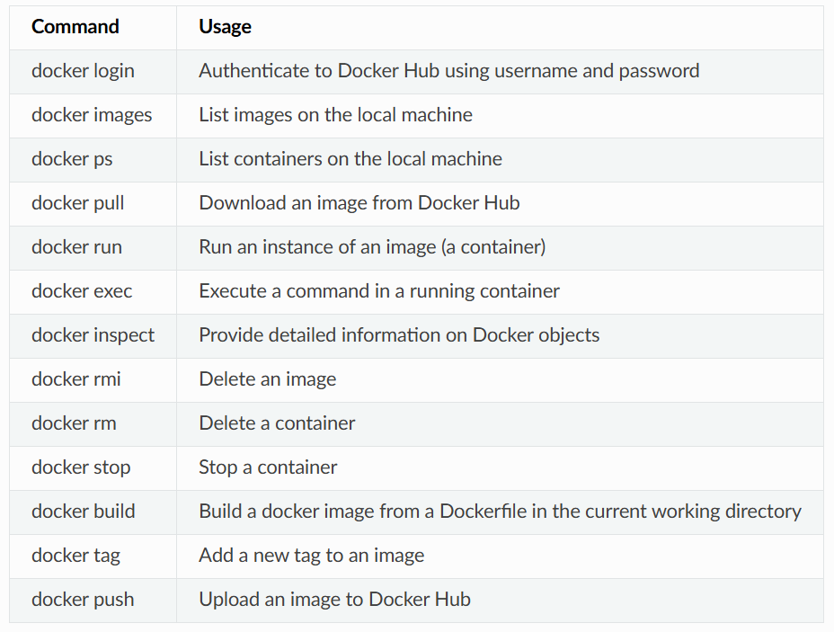

Container and Docker
https://containers-at-tacc.readthedocs.io/en/latest/index.html
Warning
Work in progress. Some contents are not yet well prepared.
Introduction to containers
- VM vs Container
- Container tools: docker, apptainer (singularity)
- Dockerfile: recipe for creating a docker image
- Image: a blueprint for launching a container
- Container: an instance of image that can execute a software env.
- Image registry: dockerhub
- Image tags:
<owner>/<name>:<tag>(e.g.,tacc/gateway19:v1)
In summary, you pull the base docker image from dockerhub, add your custom recipe using dockerfile. Based on your dockerfile, you create docker image. You then use docker image to launch the container.
Getting started with docker
Show available images.
Pull image.
Run image.
REPOSITORY TAG IMAGE ID CREATED SIZE
ubuntu 18.04 6ad7e71ba7d 2 days ago 63.2MB
hello-world latest feb5d9fea6a5 7 months ago 13.3kB
See current running containers.
Inspect metadata for your image(s).
Other core docker commands:

You can always get help from:
Working with Docker
Be careful running container images that you are not familiar with. Some could contain security vulnerabilities or, even worse, malicious code like viruses or ransomware.
To combat this, Docker Hub provides “Official Images”, a well-maintained set of container images providing high-quality installations of operating systems, programming language environments and more.
We can search through the official images on Docker Hub here.
Let’ get python image
Let’s run an interactive shell inside a container. Before that, let’s check the information of your machine.
Now, start the interactive shell
docker run --rm -it python /bin/bash
# docker run # run a container
# --rm # remove the container when we exit
# -it # interactively attach terminal to inside of container
# python # use the official python image
# /bin/bash # execute the bash shell program inside container
--rmremoves the container automatically when it stops.What Happens if You Don’t Use
--rm:
- Container Remains: If you don't use
-rm, the container will remain on your system in a stopped state after it completes its task. This allows you to inspect the container's files and logs even after it has stopped.- Use Disk Space: These stopped containers still take up disk space on your host machine.
- Manual Cleanup Required: You would need to manually remove these containers to free up space and resources, using commands like:
-itopens an interactive shell inside the container.
Now, check your identity:
root@e5cfeaf40276:/# whoami
root
root@e5cfeaf40276:/# pwd
/
root@e5cfeaf40276:/# uname -a
Linux e5cfeaf40276 5.15.167.4-microsoft-standard-WSL2 #1 SMP Tue Nov 5 00:21:55 UTC 2024 x86_64 GNU/Linux
If you don’t want to open an interactive shell, but want to use commands,
docker run --rm python whoami
root
docker run --rm python pwd
/
docker run --rm python uname -a
Linux 8b1859f27f61 5.15.49-linuxkit-pr #1 SMP Thu May 25 07:17:40 UTC 2023 x86_64 GNU/Linux
docker run -it --rm python
Python 3.12.1 (main, Jan 17 2024, 06:18:08) [GCC 12.2.0] on linux
Type "help", "copyright", "credits" or "license" for more information.
>>>
The first three commands above omitted the -it flags because they did not require an interactive terminal to run. On each of these commands, Docker finds the image the command refers to, spins up a new container based on that image, executes the given command inside, prints the result, and exits and removes the container.
Containerize your code
Install code interactively
Scenario: You are a researcher who has developed some new code for a scientific application. You now want to distribute that code for others to use in what you know to be a stable production environment (including OS and dependency versions). End users may want to use this code on their local workstations, on an HPC cluster, or in the cloud.
cd ~/
mkdir python-container/
cd python-container/
touch Dockerfile
pwd
/Users/username/python-container/
ls
Make a random python file pi.py
# pi.py
#!/usr/bin/env python3
from random import random as r
from math import pow as p
from sys import argv
# Make sure number of attempts is given on command line
assert len(argv) == 2
attempts = int(argv[1])
inside = 0
tries = 0
# Try the specified number of random points
while (tries < attempts):
tries += 1
if (p(r(),2) + p(r(),2) < 1):
inside += 1
# Compute and print a final ratio
print( f'Final pi estimate from {attempts} attempts = {4.*(inside/tries)}' )
See your files
Let’s start an interactive session. Consider a scenario where your code works for your local linux machine and want to containerize it.
It represents,
docker run # run a container
-it # interactively attach terminal to inside of container
-v $PWD:/code # mount the current directory to /code
unbuntu:18.04 # image and tag from Docker Hub
/bin/bash # shell to start inside container
If you don’t have ubuntu:18.04, docker will download the image from dockerhub. Then it will mount $PWD$ to /code dir in the container ubuntu.
Let’s update the ubuntu package manager apt.
Install required packages
Install and test your code
cd /code
chmod +rx pi.py # make pi.py executable
export PATH=/code:$PATH # Add `/code` to PATH to search for `pi,py`
Now, test the code.
When you are done exit to exit container.
Build from a Dockerfile
FROM ubuntu:18.04
RUN apt-get update
# docker build process cannot handle interactive prompts, so we use the -y flag with apt.
RUN apt-get upgrade -y
RUN apt-get install -y python3
Each RUN instruction creates an intermediate image (called a ‘layer’). Too many layers makes the Docker image less performant, and makes building less efficient. We can minimize the number of layers by combining the RUN instructions:
Copy your files
Full script:
# Base image
FROM ubuntu:18.04
# Install packages (minimize the number of `RUN`)
RUN apt-get update && apt-get upgrade -y && apt-get install -y python3
# Copy your file
COPY pi.py /code/pi.py
# Make the code executable
RUN chmod +rx /code/pi.py
# Add the project to PATH
ENV PATH="/code:$PATH"
Once the Dockerfile is ready, build an image
# -t: tag the image
# username: optional. preferably, it is dockerhub username
# .: indicates the location of Dockerfile
Build the image,
To change the docker image name,
To remove the image,
To inspect image
Test the image
docker run --rm -it username/pi-estimator:0.1 /bin/bash
# docker run # run a container
# --rm # remove the container when we exit
# -it # interactively attach terminal to inside of container
# username/... # image and tag on local machine
# /bin/bash # shell to start inside container
Unlike the interactive image build, here, we don’t use
-vto mound the code since we alreadyCOPYthe code, so the code in already in the container.
If we just want the result, not interactive shell session,
Share Your Docker Image
Commit to github
pwd
/Users/username/python-container/
ls
Dockerfile pi.py
git init
git add *
git commit -m "first commit"
git remote add origin git@github.com:username/pi-estimator.git
git branch -M main
git push -u origin main
Let’s algo tag the repo as ‘0.1’ to match our docker image tag:
Command:
git tag -a 0.1 -m "first release"
git: This is the main command for Git, the version control system.tag: This is the Git subcommand used to create, list, delete, or verify tags.a 0.1: This flag (a) specifies that you want to create an annotated tag with the name0.1. Annotated tags are stored as full objects in the Git database, containing the tagger name, email, date, and tagging message, along with the commit.m "first release": This flag (m) allows you to add a message to the tag, in this case, "first release." This message is stored in the tag object.Command:
git push origin 0.1
git: The main Git command.push: This is the Git subcommand used to upload local repository content to a remote repository.origin: This is the default name for your remote repository (the place where your code is hosted remotely, such as GitHub, GitLab, or Bitbucket).0.1: This is the name of the tag you created, which you are now pushing to the remote repository.By combining these commands, you create an annotated tag to mark a specific point in your repository's history and then push that tag to your remote repository to share it with collaborators.
Push to docker hub
Remember, the image must be name-spaced with either your Docker Hub username or a Docker Hub organization where you have write privileges in order to push it:
Hands-on Exercise
Scenario: You have the great idea to update your python code to use argparse to better handle the command line arguments. Outside of the container, modify pi.py to look like:
Update our pi.py . This change allows you to pass arg flags.
#!/usr/bin/env python3
from random import random as r
from math import pow as p
from sys import argv
# Use argparse to take command line options and generate help text
import argparse
parser = argparse.ArgumentParser()
parser.add_argument("number", help="number of random points (int)", type=int)
args = parser.parse_args()
# Grab number of attempts from command line
attempts = args.number
inside = 0
tries = 0
# Try the specified number of random points
while (tries < attempts):
tries += 1
if (p(r(),2) + p(r(),2) < 1):
inside += 1
# Compute and print a final ratio
print( f'Final pi estimate from {attempts} attempts = {4*(inside/tries)}' )
Correspondingly, update the Dockerfile for the container to consider the new updated functionality of the code.
FROM ubuntu:18.04
RUN apt-get update && apt-get upgrade -y && apt-get install -y python3
COPY pi.py /code/pi.py
RUN chmod +rx /code/pi.py
ENV PATH="/code:$PATH"
# Make container print the help for the `pi.py`
CMD ["pi.py", "-h"]
Rebuild the image and run.
remember,
--rmremoves containers after it runs and stops.
usage: pi.py [-h] number
positional arguments:
number number of random points (int)
optional arguments:
-h, --help show this help message and exit
If you want to run the code directly,
If you want to run the code interactively,
docker run --rm -it username/pi-estimator:0.2 /bin/bash
which pi.py
# /code/pi.py
pi.py 1000000
# Final pi estimate from 1000000 attempts = 3.141168
exit
Commit to Github
git add *
git commit -m "using argparse to parse args"
git push
git tag -a 0.2 -m "release version 0.2"
git push origin 0.2
Other tips
Some miscellaneous tips for building images include:
- Save your Dockerfiles – GitHub is a good place for this
- You probably don’t want to use ENTRYPOINT - turns an container into a black box
- If you use CMD, make it print the help text for the containerized code
- Usually better to use COPY instead of ADD
- Order of operations in the Dockerfile is important; combine steps where possible
- Remove temporary and unnecessary files to keep images small
- Avoid using ‘latest’ tag; use explicit tag callouts
- The command
docker system prunewill help free up space in your local environment - Use ‘docker-compose’ for multi-container pipelines and microservices
- A good rule of thumb is one tool or process per container
Containers on HPC
For shared systems like HPC, Docker runtime is not secure. Apptainner is used instead of Docker. It is compatible with Docker containers. We provide a general guideline to use Apptainer with docker container.
# Start interactive session
idev -m 40
# Load the apptainer module
module list
# Check how to load apptainer module
module spider apptainer
# As of 1/16/2025, `module spider apptainer` instruct you to do following
module load tacc-apptainer/1.3.3
# Check your loaded modules
module list
Core Apptainer commands
# Pull docker image
# If you would need to pull docker image like follows,
# `docker pull yjchoi9212/kratos-pfem-tacc:v0`
# You need you do following in apptainer
apptainer pull docker://<docker-image-name>:<tag>
This will make .sif file, which is essentially your apptainer container.
Interactive shell
Run container
To remove things,
To remove containers/instances:
bash
Copy
# List running instances first
apptainer instance list
# Stop a specific instance
apptainer instance stop instance_name
# Stop all running instances
apptainer instance stop --all
Important notes:
- Unlike Docker, Apptainer images are single files with
.sifextension - You can simply delete the .sif file to remove an image
- Apptainer doesn't store containers persistently like Docker does
- Instances (running containers) are automatically cleaned up when stopped
- There's no equivalent to Docker's dangling images or container cleanup